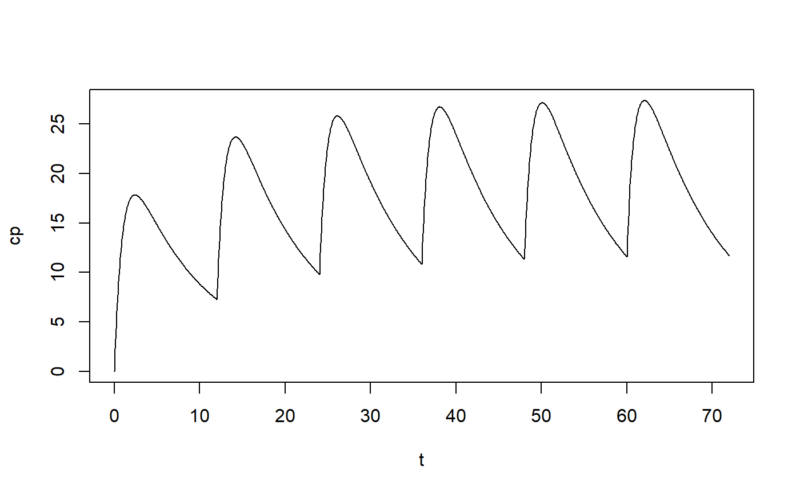

Provide concentration-time curves.
pk_curve( t, model = "1cmt_oral", params = list(ka = 2.77, CL = 2.5, V = 25), dose = 600, ii = 24, addl = 0, ss = F )
| t | Observation time in h, specified as a vector. |
|---|---|
| model | The model to use. Must be one of "1cmt_bolus", "1cmt_infusion", "1cmt_oral", "2cmt_bolus", "2cmt_infusion", "2cmt_oral", "3cmt_bolus", "3cmt_infusion", "3cmt_oral". The default is "1cmt_oral". |
| params | A named list containing parameter values for the selected model type. |
| dose | Dose amount. |
| ii | Interdose interval (or tau), in hours (default 24). |
| addl | Number of additional doses (default 0). |
| ss | Assume steady state concentration (default |
A data frame containing times (t) and concentrations (cp).
plot(pk_curve(t=seq(0,72,by=0.1), model="3cmt_oral", ii=12, addl=5, params=list(CL=2.5, V1=25, V2=2, V3=5, Q2=0.5, Q3=0.25, ka=1)), type="l")